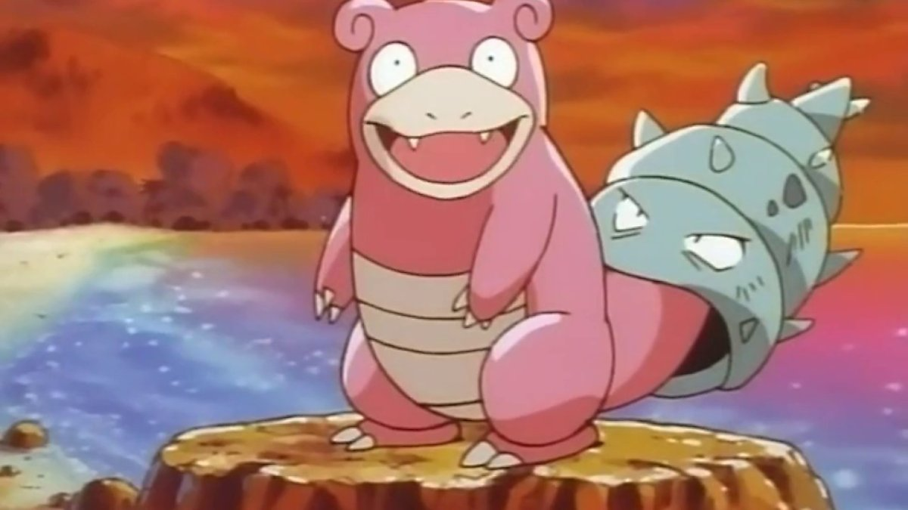

<!DOCTYPE html>
<html lang="en">
<head>
    <meta charset="UTF-8">
    <title>Document</title>
</head>
<body>
    <input type="button" value="눌렁" onclick="f_write();">
    <script>
        function f_write(){
            // 기존에 만들어진 요소를 덮어씌워지는 특징 존재 - 주의 요망
            document.write("<div style=\"border:1px dashed red;\">DIV</div>");
            document.write(`<div style="border:1px dashed red;">DIV</div>`); 
            // backtick를 큰따옴표 대신 사용하면 내용에 큰따옴표를 사용할 수 있다
            document.write(``); 
        }
    </script>
</body>
</html>